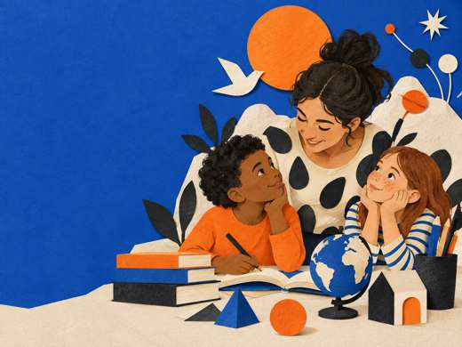

03—05 лет
пространство педагогики
Учиться —
значит
становиться
собой.
Создаём среду, где любопытство ведёт вперёд, а взрослые умеют быть рядом.
О нашем подходе ↓
01 / наша оптика
Не «дать знания».
А зажечь вопрос.
✳
Мы верим в внимательный диалог, игру как исследование и право ребёнка на свой темп.
02 / можно начать здесь
Небольшие группы, живые занятия и много пространства для своего голоса.
“
Ребёнку нужен не ответ на каждый вопрос. Ему нужен человек, который не боится искать вместе.
— Из нашего манифеста
03 / читаем вместе